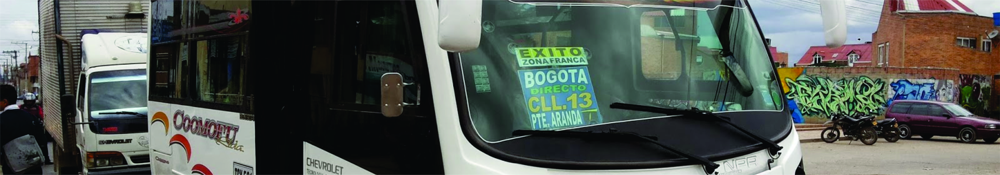

RutasSabana es una iniciativa que busca entregar a los usuarios de transporte público, información sobre las rutas y paradas de las rutas intermunicipales entre la ciudad de Bogotá y los municipios vecinos, con el fin de mejorar su calidad de vida y contribuir de manera positiva a la movilidad regional.
Actualmente se encuentran disponibles las rutas de los municipios de Madrid, Mosquera, Funza, Facatativá, Subachoque, El Rosal, Bojacá y Zipacón, pero en el futuro esperamos expandir la cobertura de la aplicación a otros municipios.